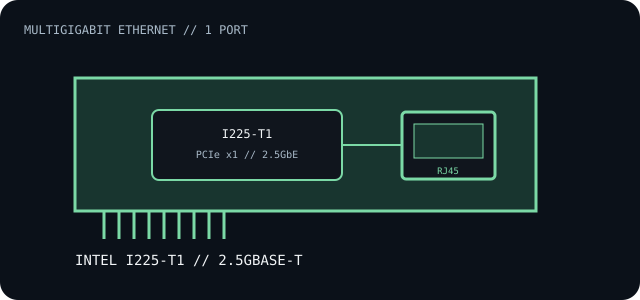

[ INDIVIDUAL COMPONENT // EXPANSION CARDS ]
Intel Ethernet Network Adapter I225-T1
Single-port multigigabit copper Ethernet adapter built around Intel's I225 controller. Record the adapter SKU separately from the controller-only I225-V parts.

IDENTIFICATION: This record is for adapter model I225-T1 (Intel SKU 211808), not every motherboard implementation of the I225 controller. Verify board label, PCI ID and controller stepping before installing firmware or drivers.
Specifications and compatibility
| Exact model / SKU | Intel Ethernet Network Adapter I225-T1, SKU 211808; order identifiers may include I225T1 and I225T1BLK. |
|---|---|
| Controller | Intel Ethernet Controller I225; adapter documentation does not guarantee that all boards/steppings share identical silicon revisions. |
| Bus / host interface | PCI Express 3.1 x1 (5 GT/s); confirm slot enumeration, firmware and host platform compatibility. |
| Ethernet standards / rates | 10BASE-T, 100BASE-TX, 1000BASE-T and 2.5GBASE-T; use a suitable twisted-pair cable and a link partner that supports the negotiated rate. |
| Ports / connectors | One shielded RJ-45 copper port. No SFP cage, transceiver, Wi-Fi radio or second port. |
| OS / driver compatibility | Use Intel's Ethernet driver-package release notes for supported Windows and Linux distributions; package support changes over time. Older Windows releases may require an earlier compatible package. |
| Revision / host caveat | Intel notes platform-generation and stepping considerations for the I225 family. Match the full adapter SKU and PCI device/revision ID to current Intel release notes; do not infer behavior from a motherboard I225 implementation. |
Installation and archival notes
- Record the board revision, PCI ID, driver package version, link partner and cable category when troubleshooting negotiation.
- Use a PCIe x1-capable slot with appropriate clearance; install Intel's supported driver before attributing link faults to the port.
- 2.5GbE is the nominal Ethernet link rate, not a guaranteed end-to-end application rate.
Manufacturer specifications and drivers
- Intel — Ethernet Network Adapter I225 familyManufacturer overview for the adapter family that includes the I225-T1.
- Intel — I225 adapter downloadsModel-family drivers and release-specific operating-system support.
- Intel — Ethernet Adapters and Devices User GuideAdapter installation, configuration and driver guidance.